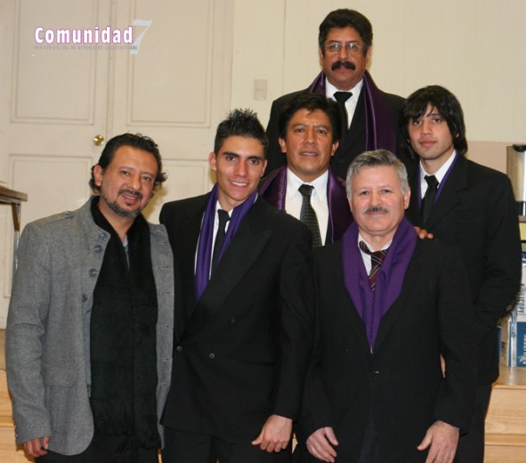
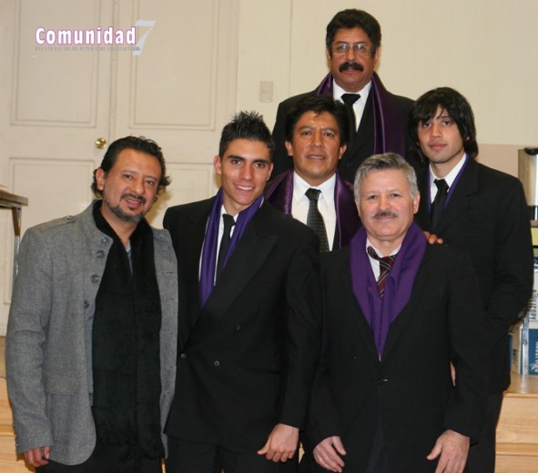

Horario

4°
| Clave | Materia | Lunes | Martes | Miércoles | Jueves | Viernes |
| AC401 | BASES DE DATOS | 7 a 8 | 7 a 8 | 7 a 8 | 7 a 8 | 7 a 8 |
| BC401 | TECNOLOGIAS WEB | 8 a 9 | 8 a 9 | 8 a 9 | 8 a 9 | 8 a 9 |
| CB401 | Inv de operaciones | 12 a 13 | 12 a 13 | 12 a 13 | ||
| CI406 | PROBABILIDAD Y ESTADISTICAS | 10 a 11 | 10 a 11 | 10 a 11 | 10 a 11 | 10 a 11 |
| CI406 | Diseño y arquitectura de sw | 13 a 14 | 13 a 14 | 13 a 14 | 12 a 14 | CI406 | Ingles | 11 a 12 | 11 a 12 | 11 a 12 | 11 a 12 | 11 a 12 | CI406 | Diseño de algoritmos | 9 a 10 | 9 a 10 | 9 a 10 | 9 a 10 | 9 a 10 |
 
